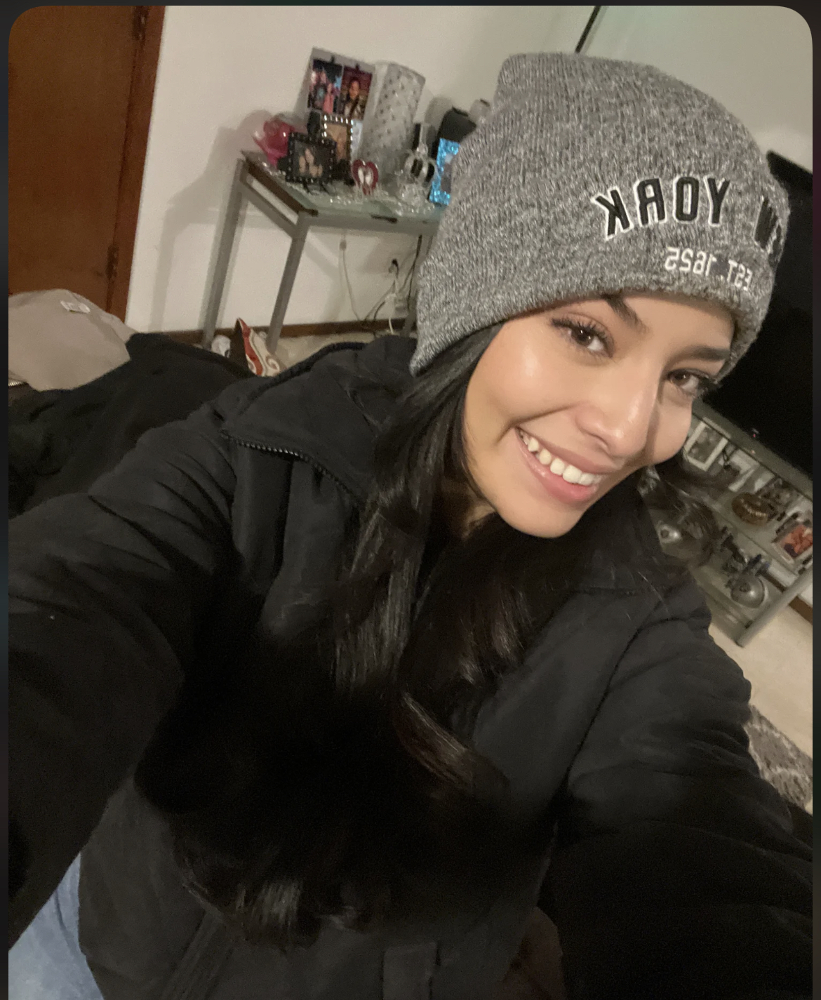

Shyana Muller
Shyana07@unm.edu
A Little About Me
I am majoring in business. I'm born and raised here in Albuquerque,New Mexico. I want to help run my dad's and brother's businesses in the future and then eventually I want to expand and one day have my own. I took this course because I always thought this was so interesting and my brother's business is gonna be about marketing so I want to help him design some websites. Throughout my life I was involved with sports. I was in baseball,volleyball,basketball, cheerleading, and a little bit of gymnastics. My favorites were volleyball and cheer. Those were the sports that I felt most passionate about. The photo I picked was the last time I performed for state.
Professional Experience
I started working after high school. Well I work with my dad here and there but it was not really a job. My first job was at amazon. It paid well; the hours did not work when I started college. So from there I left and started to work where I am currently working at Ross. Hopefully in a few years I’ll be more involved with my dad’s business and my brother’s.